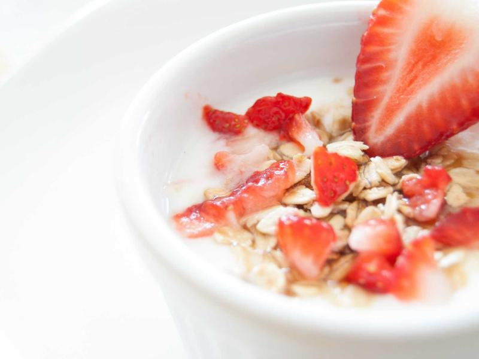
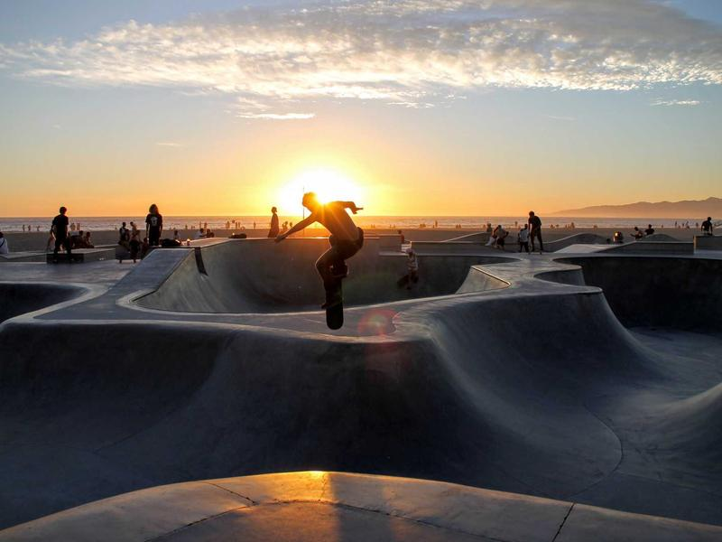
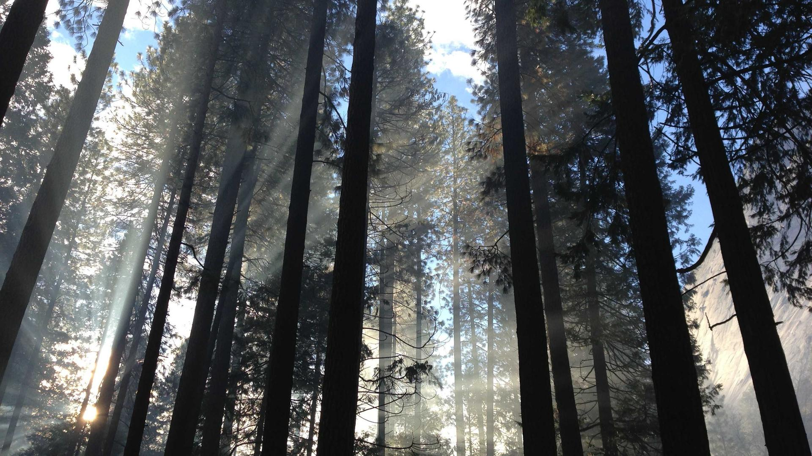

Galerie
L'atmosphère





La cuisine de Charlotte, depuis 2017.
Réserver une tableLe Bistrot des Halles, c'est l'histoire de Charlotte Vandenberghe et de Thomas Lemaire — elle aux fourneaux après dix ans passés entre Lyon et le Périgord, lui en salle après une carrière dans le vin nature. Ils se sont rencontrés au marché des Halles Saint-Géry un samedi matin de 2016, et l'idée d'ouvrir un bistro à quelques pas est née là, entre deux étals.
Notre cuisine, c'est celle qu'on aimerait manger tous les jours : des produits de saison venus de petits maraîchers belges, des viandes sourcées chez Dierendonck à Saint-Idesbald, des poissons de la criée d'Ostende deux fois par semaine. La carte change toutes les six semaines, jamais plus de douze plats à la fois.
Ce qu'on veut, c'est qu'on se sente bien chez nous. Une lumière chaude, des conversations qui se croisent, une bouteille qu'on partage avec ses voisins de table. Le service est sans chichi mais attentif. Et oui, on fait notre pain.
Tout ce qu'on sert, on le défend. Les producteurs sont nommés, la carte est courte, le rythme est saisonnier. Voilà ce que ça donne en chiffres.


38 couverts, service midi et soir du mardi au samedi, dimanche midi. La réservation se fait via TheFork ou par téléphone au +32 2 511 38 47.
Réserver sur TheForkRue du Marché aux Herbes 87
1000 Bruxelles, Belgique
+32 2 511 38 47
bonjour@bistrotdeshalles.be